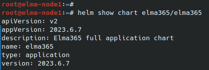

You can migrate data from databases within a Kubernetes cluster to external storages using:
- External tools. Read more in the Data migration from embedded to external databases in BRIX Enterprise article.
- Elma365-Backupper utility.
The main steps of data migration using Elma365-Backupper utility:
начало внимание
After migrating databases to external storages, system reactivation is required.
конец внимание
Step 1: Back up databases
- Install the Elma365-Backupper utility and set up its configuration. Read more about it in the Back up and recover databases article.
- Back up the BRIX application databases:
elma365-backupper backup <<db-type>>
Where <<db-type>> is the name of the database that you want to back up. Value options:
mongospecifies MongoDB.postgresspecifies PostgreSQL.s3specifies S3 storage.allspecifies all databases (MongoDB, PostgreSQL, S3).
Step 2: Update BRIX application parameters
- Since the Elma365-Backupper utility gets the database path settings from the
values-elma365.yamlconfiguration file, specify the values of external storages in this file. - Update the BRIX application parameters using the
values-elma365.yamlconfiguration file.
Updating parameters via the Internet
helm show chart elma365/elma365  The chart version will be specified in the
helm upgrade --install elma365 elma365/elma365 -f values-elma365.yaml --version <elma365-chart-version> --timeout=30m --wait [-n namespace]
|
Updating parameters without the Internet connection
helm upgrade --install elma365 ./elma365 -f values-elma365.yaml --timeout=30m --wait [-n namespace]
|
Step 3: Restore databases
- Restoring from backup should be done to empty databases and S3 storage. So clean them with the
--cleanup-databaseskey. - Restore the databases from the last backup:
elma365-backupper restore <<db-type>>
Where <<db-type>> is the name of the database for which you want to get a list of backups. Value options:
mongospecifies MongoDB.postgresspecifies PostgreSQL.s3specifies S3 storage.allspecifies all databases (MongoDB, PostgreSQL, S3).
Found a typo? Select it and press Ctrl+Enter to send us feedback